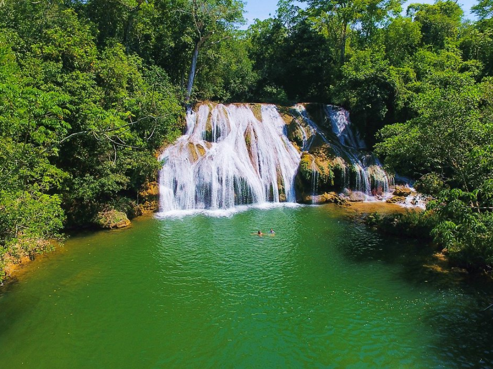

Mato Grosso do Sul tem como capital Campo Grande e é conhecido por abrigar grande parte do Pantanal, uma das maiores áreas alagadas do mundo. Sua economia é baseada na agropecuária, turismo ecológico e agricultura, enquanto a cultura local mistura influências indígenas, paraguaias e sertanejas.

Voltar